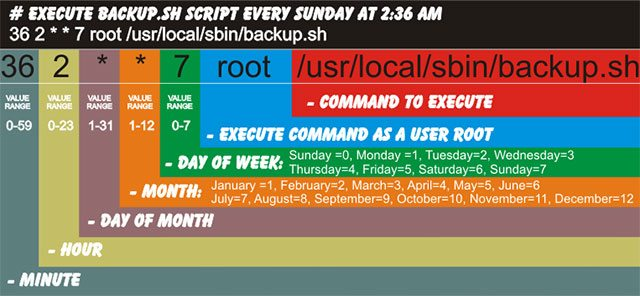

มารู้จักกับ Cron
Crontab คือคำสั่งที่จะทำงานตามเวลาที่กำหนด ซึ่งจะช่วยทำให้เราสะดวกขึ้นเหมาะในการที่จะต้องสั่งงานบางอย่างซ้ำๆ กันหลายครั้ง อาจจะเป็นทุกชั่วโมง ทุกวัน หรือ ทุกเดือน เช่นการสั่งให้ Server ทำ Backup ทุกๆ สัปดาห์ เป็นต้น
Crontab คือคำสั่งที่จะทำงานตามเวลาที่กำหนด ซึ่งจะช่วยทำให้เราสะดวกขึ้นเหมาะในการที่จะต้องสั่งงานบางอย่างซ้ำๆ กันหลายครั้ง อาจจะเป็นทุกชั่วโมง ทุกวัน หรือ ทุกเดือน เช่นการสั่งให้ Server ทำ Backup ทุกๆ สัปดาห์ เป็นต้น